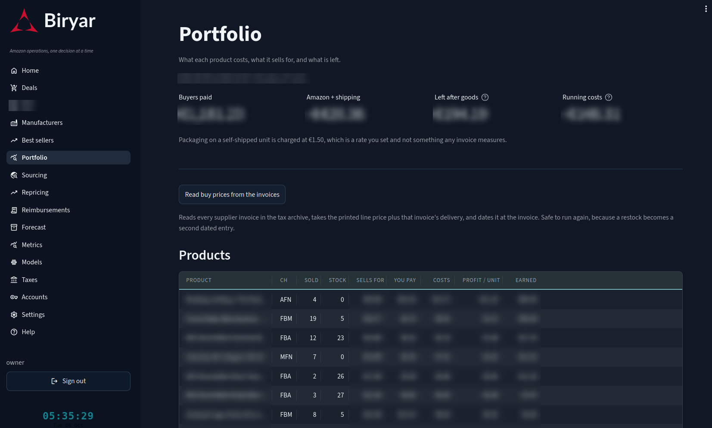
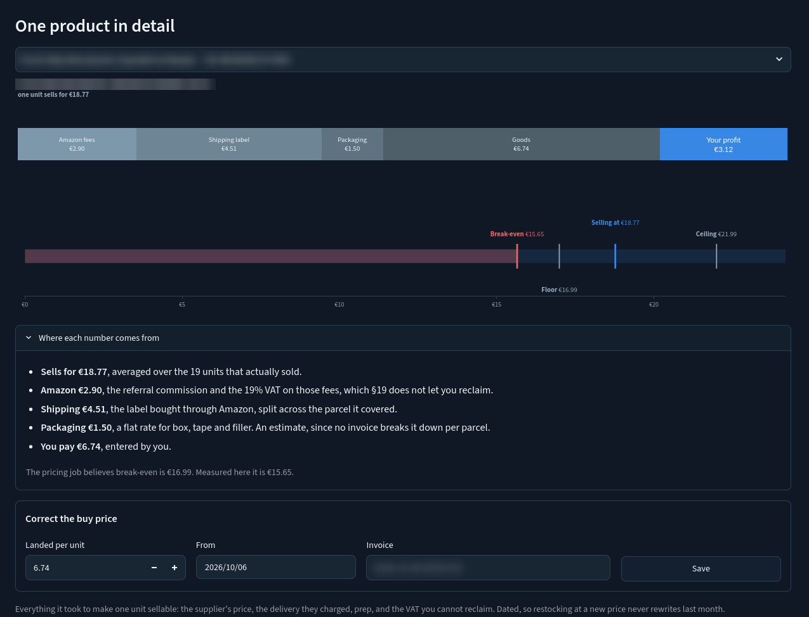
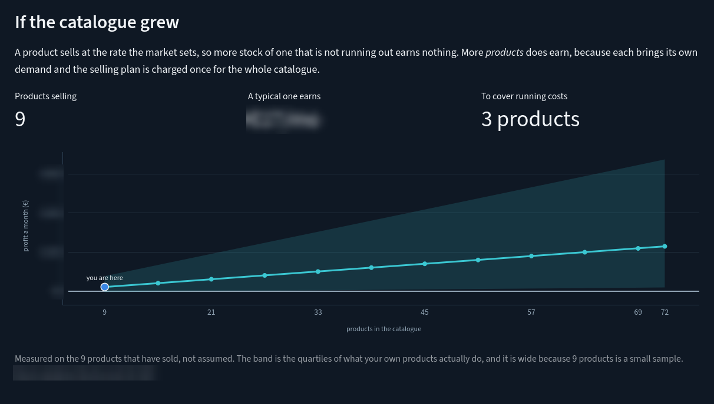
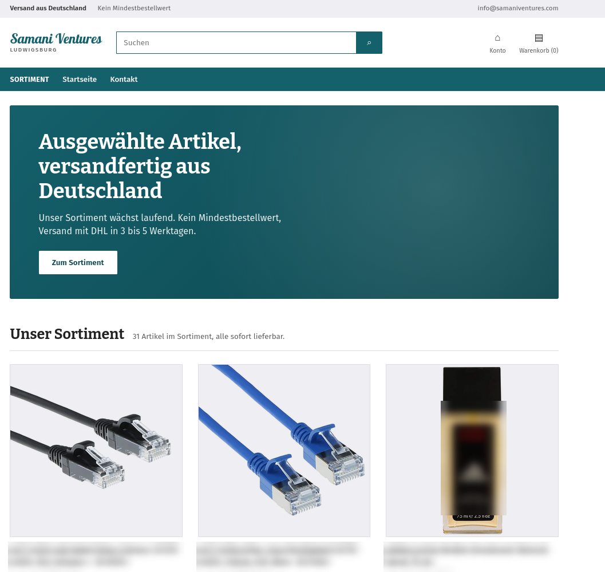

The first four reports followed money out of the business, into stock and into prices. This one follows it back. It describes how a bought product becomes a live listing, why listings die in ways Amazon does not show, and how Biryar works out what each sale really left behind once every party has taken its share.
Amazon's payments page reports revenue minus Amazon's own cut and calls it net proceeds. It has never seen a supplier invoice, so it cannot know what anything cost. Profit is a number no single system in this business holds. Biryar builds it by joining three records that were never meant to meet, the supplier's invoice, Amazon's itemised fees and the postage label bought hours after the order, and it refuses to show a profit it cannot trace to all three.
Biryar's business is reselling, so every product it lists already exists on Amazon. Someone else, usually the brand, created the product page and owns its title, photographs and description. What this account adds is an offer, a price, a quantity and a condition on somebody else's page. Amazon's listing interface has a mode for exactly that, which validates only the offer fields and does not demand the catalogue content that belongs to the brand. Using the full listing mode instead produces a wall of errors about attributes a reseller has no business supplying.
Every listing operation is rehearsed before it is performed. Amazon's interface can run its complete validation on a request and report the problems it would raise, without changing anything. That makes a dry run a real test of the exact request rather than a simulation of it, and the agent treats the rehearsal as the default and the live write as the deliberate step.
Since December 2024 the EU's General Product Safety Regulation requires products sold online to name their manufacturer and, for makers outside the EU, a responsible person inside it, together with safety information [1]. On Amazon those facts are listing attributes, and a listing missing them can be suppressed. Biryar records the answers per brand rather than per product, because they are properties of the brand, read off one box for the whole range, and because Amazon itself asks that a manufacturer's details be submitted identically every time. Seven variants of one fragrance line share one record, which leaves one chance to get it right instead of seven chances to get it different.
The compliance data are written onto live listings with a partial update that names only the fields it touches. A full replacement would silently delete the price, quantity and condition of an offer that is already selling. Four attribute names and shapes came from Amazon's live product-type definitions rather than from memory, and every one of them would have been guessed wrong. A safety attestation that looks like a yes-or-no checkbox in Seller Central is a true boolean underneath. A fifth field, the manufacturer's name, belongs to the catalogue and not to the offer, and writing it with any value other than Amazon's own produced an error that stopped the rest of the update from taking effect. The one field that was none of the reseller's business blocked the four that were.
Stock sent to Amazon's warehouses needs a barcode label on every unit, carrying Amazon's internal stock number, the title and the condition. Amazon's own label endpoints are attached to an inbound shipment that has to be created and confirmed first. Biryar generates the item labels locally instead, since everything printed on them is already known, as a sheet of 24 labels per A4 page with a standard Code 128 barcode [2]. A damaged sticker can be reprinted without touching a shipment. Box and pallet labels genuinely need the shipment and are not produced this way.
A listing can stop selling for reasons Seller Central does not show. Twice a day a job asks Amazon's listing interface about every product and records one of five verdicts, sellable, suppressed, inbound, out of stock, or carrying an error. On 5 October, 26 listings were sellable and two carried errors. The job keeps the reason Amazon gives, and a history of it, because some reasons are visible nowhere else.
Six fragrance listings sat suppressed for weeks under an error for a missing responsible person under the product safety rules. The record of what was tried is instructive.
The lesson the system took from it is narrow and useful. When a targeted fix has been verified to land and the error survives anyway, the state that holds the error is not the state being edited, and recreating the object is a legitimate repair rather than a last resort.
Some blocks are not on this account's offer at all. A compliance block for children's products, or a pending safety review, sits on the product page itself, and Amazon's own notice says the page stays down until the issue is resolved by this seller or by any other seller. A block can therefore clear on a day nobody can predict, because a stranger uploaded a certificate. Biryar watches three such product pages with one catalogue request each per day. A removed page answers that it does not exist, a restored one answers normally, and when the answer changes the owner is told once and never again, so the watch cannot turn into noise.
This is the part of Biryar most recently rebuilt, and the page that shows it in the web interface was renamed from Listings to Portfolio to say so. The old page explained why a listing was blocked, useful once. What decides how the business grows is what each product earns per euro of stock, and nothing was answering that.
Amazon's finance feed itemises every order. A shipment carries, for each product line, the price the buyer paid and every fee Amazon charged on it, referral commission, fulfilment and closing fees. A postage label bought through Amazon's shipping service arrives as a separate transaction, often hours later, carrying the order it belongs to. And the monthly selling plan and inbound freight to Amazon's warehouses appear as service fees that belong to no order at all. Biryar unpacks the feed into one row per product per order, attaches each label to the order it shipped, and keeps the period costs apart.
| Buyer paid | + 20.00 | finance feed |
| Amazon commission and fees | − 3.40 | finance feed, per line |
| Postage label | − 4.10 | finance feed, attached by order |
| Packaging | − 1.50 | owner's rate, an estimate |
| Goods, landed | − 8.20 | supplier invoice, dated |
| Left behind | 2.80 | every line traced |
An illustrative merchant-shipped unit. The figures are invented for the example, the sources are the ones the system uses.
Three rules govern the attribution. A label pays for a parcel, not a product, so when one parcel holds several products its cost is split in proportion to their revenue. Splitting it equally would make a three-euro add-on look as expensive to ship as the forty-euro item it travelled with. Signs are kept as Amazon sends them, revenue positive and every cost negative, so a line's result is always a sum and a cost arriving with an unexpected sign cannot quietly improve it. And the monthly plan and inbound freight are never spread over the products that happened to sell. Cost accountants have warned for decades that allocating shared overhead to products by volume distorts which products look profitable [3, 4]. Spreading a fixed monthly fee over whichever products sold in a slow month makes the month look like a bad product.
The landed cost of a unit is the only figure in the calculation that no Amazon system holds. Several places in the platform claim to know it, and they disagree. The repricer of Part 4 needs a cost to set floors and, where no invoice is on file, derives one backwards from the seller's own minimum price. That number is circular. A break-even computed from it lands exactly on the floor it came from, every margin looks plausible, and a loss-making price reads as healthy. On this account 22 of 26 repricing rows carried such a derived cost, and one household product appeared to lose money on a cost of more than fourteen euros that was really the floor restated. Its invoices said it cost under seven.
So costs are now resolved through an explicit chain, each step carrying the name of what vouched for it, a practice the data-provenance literature would recognise as recording where each value came from and why it can be trusted [5].
The invoices themselves turned out to be the best source, and they were already on disk. The tax system of a later report archives every supplier invoice and reads it for VAT, and was throwing away the product lines, the only record of what a single unit cost. Biryar now reads those lines back. A landed unit cost is the printed price, plus that line's share of the invoice's delivery charge, plus the VAT a small business under the German small-business rule cannot reclaim, added only where the supplier priced net. Delivery is divided per unit, not per line, so a delivery charge of a few euros across five jars adds well under a euro to each. Every parsed invoice is reconciled against the total the tax system already recorded, and lines that match no listed product are reported rather than dropped, since most of them are purchases made only to support a brand approval, as described in Part 2.
Costs are dated. Buying the same product again at a new price adds a second entry rather than editing the first, and a sale is charged the cost in force on the day it sold. Accounting standards allow first-in first-out or weighted averages for inventory [6], and true first-in first-out would need a record of which physical unit sold, which nothing here keeps. With a reorder cycle of about eight weeks, dated cost and first-in first-out agree except in the days around a price change. One detail runs the other way deliberately. The repricer's floor uses the higher of two costs when batches overlap, because units from two purchases are indistinguishable once they share a warehouse bin, and a floor set from the cheaper batch would sell the dearer one at a loss.
Two costs remain estimates and are labelled as such. Packaging for a merchant-shipped parcel, a box, tape, filler and a label pouch, appears on no supplier invoice and in no Amazon fee, and was silently zero on exactly the channel whose margins are thinnest. It is now an owner-set rate per unit shipped by the business itself, excluded for units Amazon ships because its fee already bought the box. Preparation work invoiced in batches by a prep service cannot be allocated to individual units from the documents, so it stays visible as an unallocated cost rather than being guessed.
Figure 3 shows how the revenue of every product sold so far divided, overall and by fulfilment channel.
Two observations follow. The goods themselves take a little under half of what buyers pay, in both channels, which is roughly what the sourcing thresholds of Part 1 were designed to allow. And shipping the parcels oneself is not cheaper than paying Amazon to do it. Amazon's fulfilment fee is large, but postage, packaging and the remaining commission on self-shipped orders added up to more, and the self-shipped products kept less than half the share of revenue that the Amazon-shipped ones did. The comparison is confounded by product mix, since household goods and fragrances went through the business and soft toys and a video game through Amazon, but it is the kind of question the ledger was built to answer, and it now answers it per unit instead of by impression.
Every total on the page carries how much of it rests on a known cost. A margin computed over partly unpriced stock is not partly right, it is unusable, so the count of products without an honest cost sits beside the number rather than in a footnote. At present every product that has sold has a traced cost, while eleven of the thirty listed products, most of which have never sold, do not.
The Portfolio page in Biryar is built to be read in one direction. At the top, four figures for the chosen period answer the owner's questions in order, what buyers paid, what Amazon and the carriers took, what was left after the goods, and what running the catalogue cost. Below them, every listed product with stock appears in one table, the ones that have sold first and the rest below rather than omitted, with the buy price in a column of its own beside the costs. That separation is deliberate. The buy price is the only cost the owner can change by buying better, and an earlier layout that mixed it with the fees made an invented number and a paid invoice look identical. The number of products without a traced cost is stated above the table. A button reads the invoice archive again and records any new costs, each dated at its invoice.

Opening a single product shows two pictures. The first cuts one unit's selling price into fees, label, packaging, goods and what is left, as one bar whose parts add up to the whole, and when a price does not cover its costs the shortfall is drawn on the negative side rather than as an impossible remainder. The second is a price ladder, every price that matters for that product on one shared axis, with everything below the true break-even shaded. It exists because a table of floors made the reader do the comparing.

The numbers that belong to running a catalogue rather than to any one product, sales rates, weeks of cover and the capital tied up, live in a separate section at the bottom of the page, the subject of the next stage, where they are the thing being decided rather than noise beside a price.
Each month the owner chooses between two uses of the same money. Depth means more units of a product already listed. Breadth means a product nobody has sold yet. On an invoice they look alike. In the business they behave nothing alike.
A product sells at a rate the market sets. Stock does not raise that rate, it only decides whether the rate can be met. So the return on an extra unit of depth is a step. It is positive while the product would otherwise run out and zero afterwards, and buying the tenth month of cover for a product that sells once every few days converts cash into shelf space. This is the logic of the classical inventory models, in which stock beyond what demand during the cover period can absorb carries cost and earns nothing [7]. Breadth has no such ceiling, because each new product brings its own demand, while the monthly selling plan it has to help pay for is charged once for the whole catalogue. The same reasoning lies behind the long-tail economics of online retail, in which many products that each sell little can together outweigh a few that sell well [8].
The allocation metric follows from this, and it is not margin. It is contribution per euro of working capital per month, a close relative of the retailer's gross margin return on inventory investment [9]. A product earning four euros a unit on twenty euros of stock that turns twice a year is worse than one earning a euro and a half on five euros of stock that turns monthly, and ranking by margin hides that at exactly the moment capital is the binding constraint.
The model will not forecast a specific new product, because nothing in it knows what has not been bought. It projects the portfolio the owner already has. It measures the spread of contribution per unit, sales rate and unit cost across the nine products that have actually sold, and asks what a catalogue of N products like these would earn. Nine observations do not support a point estimate, so every projection carries the lower and upper quartiles as well as the median, in the spirit of exploratory rather than confirmatory analysis [10].

The chart's message is deliberately structural. A catalogue of nine good products earns less than a catalogue of thirty ordinary ones, because the running costs are paid once and every product adds its own demand. The question that sits under all the others, how many products it takes to stop losing money in a bad month, has an answer with an honest range, a few at the median and around twenty-five at the lower quartile. The sourcing agents of Parts 1 to 3 are therefore tuned to find more products, not more units, and the buy list of Part 1 sizes each purchase at about eight weeks of cover.
The business also runs a small web shop on its own domain, built on a hosted shop platform. It is not a sales channel, and no revenue is planned from it. It exists because the new-account desks of manufacturers and distributors check whether an applicant is a real trading business before they disclose prices or stock, and some of them say explicitly that they supply only retailers with an online shop of their own. A live catalogue with prices, stock, safety information and the legal pages German law requires answers that question without a phone call. At the time of writing the storefront is complete but still behind a password, so the mirror described here is keeping a shop current that the public cannot yet browse.
Because the shop earns nothing, the measure of success is the opposite of the Amazon side. It should need no attention for months at a time. Typing fifteen products in once is an afternoon, and keeping them current forever is the real cost. So Biryar does not maintain the shop. It mirrors the Amazon catalogue into it once a day, and everything below is a consequence of making that mirror trustworthy enough to leave alone.
Each day the sync reads the account's merchant listings report, one request that returns every live offer whether the catalogue holds fifteen products or fifteen hundred, so the cost of the job does not grow with the business. It then computes a plan, keyed by the seller's own SKU, that says for every product whether the shop should create it, update it, archive it or skip it, and why. The planning step is a pure function of its inputs, with no network, database or clock inside it, which is what makes its judgements testable offline and visible rather than buried in the job. Because the plan is keyed by SKU and the shop is written with one declarative call per product that states what the product should become, running the sync twice changes nothing the second time, and a shop left in any state converges. In the week before this report the daily pass produced the same plan every morning, 31 products updated to their current state, four archived because they had left Amazon, and eight skipped, each with its reason. A mirror at rest looks exactly like that.
The shop platform's own marketplace integration was not used, for two reasons. It pushes products from the shop to Amazon, the opposite of what is needed, and it assumes prices include VAT. Under the German small-business rule this business charges no VAT, so a custom connection that writes untaxed products directly was less work than fighting an integration's tax model.
| Shop field | Taken from | The rule |
|---|---|---|
| Price | This account's own Amazon offer | Copied, never computed. Never the Featured Offer price, which may belong to a competitor below this account's cost. A product with no price is skipped, never published at zero. |
| Stock | Amazon's warehouse inventory | Available units, plus units on their way in, plus units Amazon is moving between warehouses. Units reserved for a customer's order are not counted, since they are already sold. |
| Barcode and image | Amazon's catalogue | Fetched once, for products with no media yet, so the daily run normally spends nothing on it. |
| Description | Structured catalogue attributes | Brand, maker, model, colour, size and material as a short table. Amazon's bullet points only as a fallback, at most two, cut at a sentence and de-capitalised. |
| Safety information | The compliance book of Stage one | The same per-brand record that is written onto Amazon listings, rendered as a panel showing only what is known. |
| Shop-only products | A short hand-kept list | Price and quantity stated by the owner, exempt from archiving, ignored automatically once the product appears as an Amazon listing. |
Prices are copied, never computed. Amazon's referral and fulfilment fees are already inside the Amazon price, anything that sells will most likely sell on Amazon anyway, and copying is the only rule under which the shop can never undercut the business's own Amazon offer. A shop cheaper than its owner's Amazon listing makes the Amazon price look inflated, which is the pattern Amazon's fair-pricing policy penalises by withholding the Featured Offer, on the channel that actually earns. The safe rule and the low-effort rule turn out to be the same rule.
The price copied is this account's own, not the price of whoever holds the Featured Offer. The two agree whenever the account holds it and differ when it does not, and in that case the Featured Offer may belong to a competitor pricing below this account's cost. Mirroring that number would place a loss-making price in the shop and invite someone to take it.
A listing without a price is left out rather than published at zero. German consumer law ties a shop's obligations to the price it shows [11, 12], so a product listed at zero euros is a legal problem rather than a cosmetic one.
Stock is the field that went wrong most often, each time in a way that made a working business look dead to a supplier's reviewer, which is the one reader the shop exists for. The listings report leaves the quantity blank for every unit stored in Amazon's warehouses, because that stock is Amazon's to report, not the merchant's. Read literally, the whole shop showed as sold out, so stock is read from Amazon's inventory interface instead. Next, on the day the first shipment was still travelling to Amazon, every product showed zero available and three inbound, and the shop again published as sold out, so units on their way in now count. Finally, a few days later the same units showed as neither available nor inbound but reserved, because Amazon was moving them between warehouses, and seven products appeared sold out once more. Amazon's reserved figure turned out to have three parts, units held for customer orders, which are sold, and units in transfer or in processing, which are not. Only the first is now excluded. The figure published overstates slightly what could be shipped today, an honest trade, since the goods exist and orders through the shop are paid in advance and shipped by hand.
Product descriptions are built from facts rather than copied. The bullet points on a product page this account does not own are the brand's marketing text, and reproducing them would be copying someone else's work. They are also poor product copy, repetitive, capitalised and written to win a search box rather than to inform a reader. Brand, maker, model, colour, size and material are facts, they are what a buyer needs, and they compress into a small table. Safety information follows the goods. Selling to EU consumers makes the business a distributor under the product safety rules whatever the channel, and on the shop nothing enforces that obligation the way Amazon does, which is exactly why the panel is generated from the same per-brand compliance book rather than typed product by product.
Some stock can be sold everywhere except on Amazon. Products of brands gated for this account, bought with an invoice and held by the business, have no Amazon listing to mirror, and the archive step would remove anything added to the shop by hand. A short shop-only list solves this. Its products carry a price and quantity stated by the owner, are exempt from archiving, and drop out of the list automatically the day the brand is approved and the product appears as an Amazon listing.
Every half hour Biryar reads the shop's paid and unfulfilled orders and tells the owner once about each new one. Orders are paid by bank transfer in advance, so an unpaid order needs nothing but patience, and the owner marking it paid is the signal worth acting on. The system does not create the fulfilment order with Amazon and does not mark anything as shipped. Both send goods irreversibly into the post, which the platform's safety rules reserve for an explicit owner decision, and the Amazon permission that would allow it is one this account deliberately does not hold. What the automation removes is the failure that actually threatens a shop nobody watches, an order sitting unnoticed for days because there was no reason to open the shop's admin pages.

Closing the loop. Profit turned out to be the hardest number in the business to know and the easiest to fake. Every system that touches a sale holds part of it, and each part looks complete on its own. Biryar's answer is to join the parts, refuse any cost it cannot trace, keep period costs out of product margins, and label every estimate as one. What the joined numbers say is unglamorous and useful. The products are mostly fine, the catalogue is too small, and the next euro belongs to breadth.